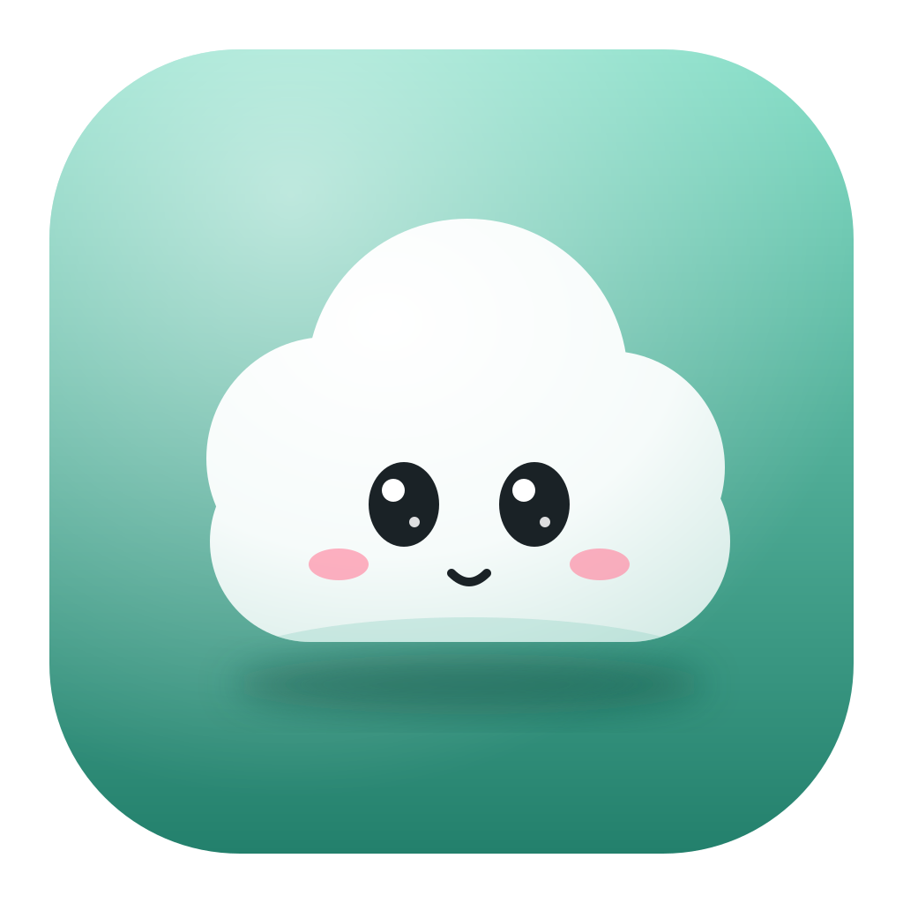
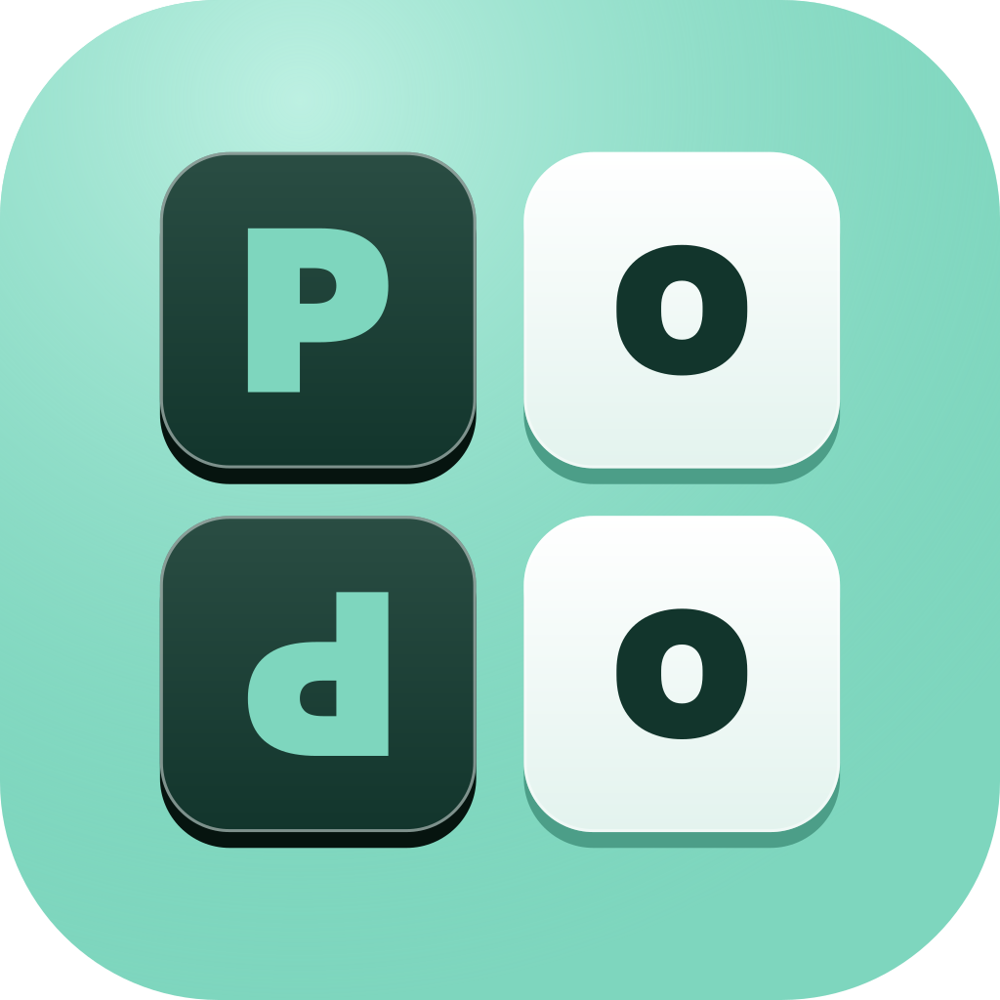

Ваш ПК, только уютнее
Pody Lab делает программы для Windows, которые берут на себя мелочи: показать музыку и встречу, открыть нужное одной кнопкой, напомнить попить воды. Все они бесплатные.
PoDee
Остров вверху экрана: часы, музыка, голос и ИИ-чат, календарь, Claude Code. Рядом живёт облачко PoDy.
Подробнее →
СкороPoDoo
Старый телефон или планшет у монитора становится пультом для ПК: программы, кнопки для OBS и Photoshop, музыка, тачпад.
Подробнее →💚
Поддержать
Программы бесплатные. Если они вам пригодились, можно отправить любую сумму картой или криптой.
✍️
Сделать лучше вместе
Поддержите донатом и напишите в сообщении, что улучшить или какую программу сделать следующей.